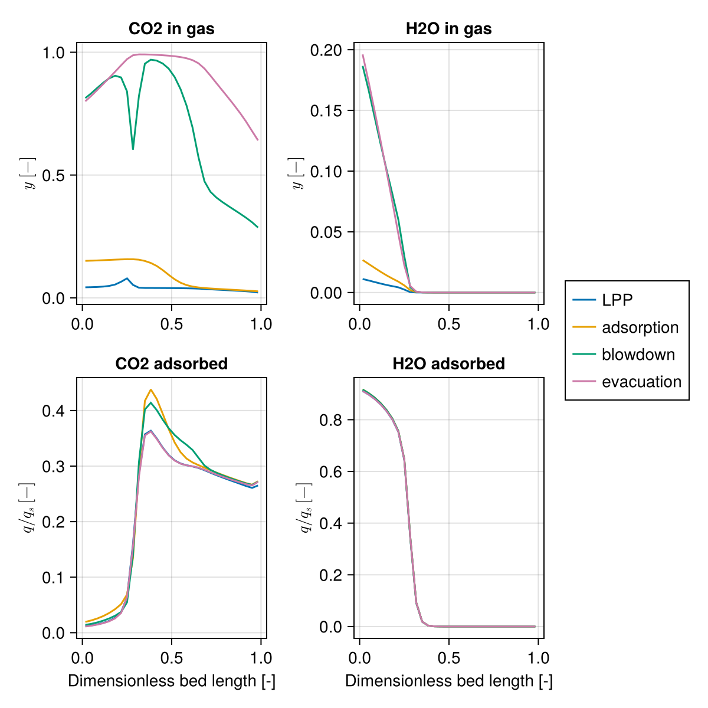
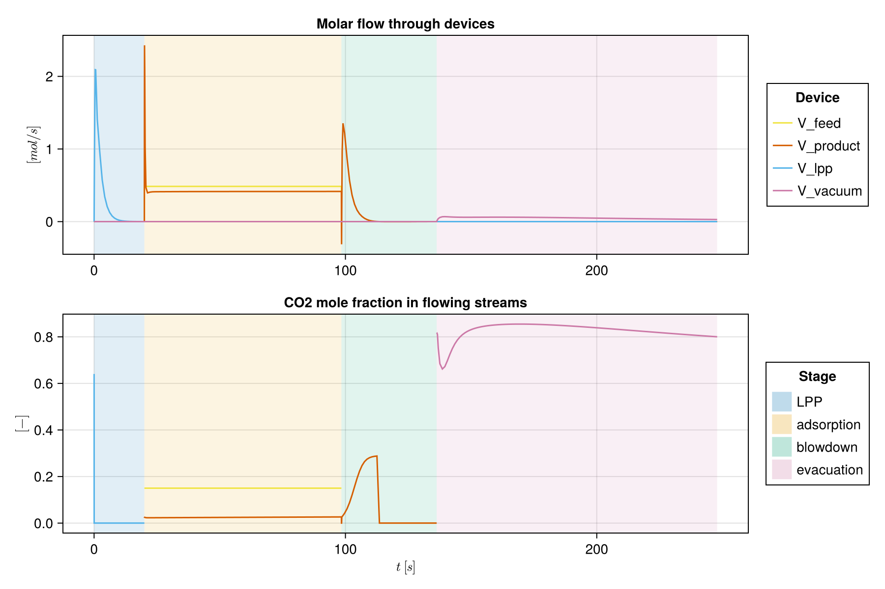

Wet flue gas: single-bed VSA with light product pressurisation
This example follows section 3 of Krishnamurthy et al. (2014), which captures CO₂ from a wet flue gas of 15% CO₂, 82% N₂ and 3% H₂O at 25 °C with a single zeolite 13X bed. The cycle has four steps:
- Light product pressurisation (LPP): nitrogen-rich light product enters the top of the evacuated bed and brings it up to the high pressure.
- Adsorption: feed enters the bottom at the high pressure; CO₂ and water are adsorbed and nitrogen leaves the top.
- Blowdown: the bed is taken down to an intermediate pressure through the top (co-current), which removes most of the remaining nitrogen.
- Evacuation: the bed is evacuated through the bottom (counter-current) to the low pressure, which gives the CO₂ product.
Water is adsorbed much more strongly than CO₂, so it stays in a short zone near the feed end, but it takes up capacity there and makes the evacuation cost more energy.
The model uses the paper's data: the isotherms (its Table 1, case 1), the column, particle and gas properties (Table S2 of its Supporting Information), the feed and the operating conditions. The particle size is not given there and is taken from Haghpanah et al. (2013). Two simplifications: the LPP step lasts a fixed 20 s, and uses pure nitrogen rather than the stored effluent of the previous adsorption step.
import Mocca
using Mocca.Units1. Gas and adsorbent
The wet flue gas, and the extended dual-site Langmuir isotherm on 13X for CO₂, N₂ and H₂O from Mocca's library. At the feed conditions water fills the sorbent far more than CO₂ does:
gas = Mocca.krishnamurthy_2014_gas()
adsorbent = Mocca.load_adsorbent("zeolite_13x_krishnamurthy_2014")
q_feed = Mocca.equilibrium_loading(adsorbent, gas; pressure = 1atm, temperature = 298.15,
composition = (CO2 = 0.15, N2 = 0.82, H2O = 0.03))
for (name, q) in zip(gas.names, q_feed)
println(rpad(name, 4), " loading in equilibrium with the feed: ", round(q, digits = 2), " mol/kg")
endCO2 loading in equilibrium with the feed: 0.1 mol/kg
N2 loading in equilibrium with the feed: 0.0 mol/kg
H2O loading in equilibrium with the feed: 14.17 mol/kg2. Process
lpp_vsa_process builds the bed, four devices with their roles, and the cycle with the operating conditions of section 3.1 of the paper: adsorption 78.4 s, blowdown 37.9 s to 0.08 bar, evacuation 111.6 s to 0.03 bar, and a feed interstitial velocity of 0.45 m/s. The bed has 30 cells, as in the paper, and starts evacuated and full of nitrogen. The time steps start at 0.01 s in every stage and double up to 1 s, which carries the solver through the abrupt start of a stage, such as the feed switching on at the start of adsorption.
process = Mocca.lpp_vsa_process(timestepping = Mocca.TimeStepping(max_dt = 1.0, first_dt = 0.01))Process LPP VSA, wet flue gas: CO2/N2/H2O feed at 1.013 bar, 298.15 K, capturing CO2
Bed: fixed bed of zeolite 13X, 30 cells
bottom V_feed (feed), from boundary at 1.013 bar; V_vacuum (extract), to boundary at 0.03 bar
top V_product (product), to boundary at 1.013 bar; V_lpp (light_inlet), from boundary at 1.013 bar
cycle of 4 stages, 247.9 s:
LPP 20.0 s V_lpp
adsorption 78.4 s V_feed, V_product
blowdown 37.9 s V_product
evacuation 111.6 s V_vacuum
Its flowsheet and cycle, and the same steps written out:
Mocca.Cycle([
Mocca.Pressurise(20.0; source = :light_product),
Mocca.Adsorb(78.4; velocity = 0.45),
Mocca.Blowdown(37.9; to = 0.08bar),
Mocca.Evacuate(111.6; to = 0.03bar),
])3. Cycling to the paper's steady state
The paper judges cyclic steady state by the CO₂ balance: the CO₂ fed and the CO₂ leaving must agree within 0.5% for five consecutive cycles, after at least 50 cycles (its eq. S19).
result = Mocca.cyclic_steady_state(process; method = :mass_balance, max_cycles = 300)
println("Cycles: $(result.iterations), CO₂ balance met: $(result.converged), last error: $(round(100 * result.history[end], digits = 2))%")Cycles: 300, CO₂ balance met: false, last error: 0.7%The criterion only checks CO₂. Water is held far more strongly and loads the feed end of the bed over hundreds of cycles, slowly pushing CO₂ further along it, so the CO₂ balance drifts around 1% and may not close within 300 cycles. method = :anderson or :newton instead requires every variable, including the water loading, to settle.
4. Process performance
The performance from the streams through the devices over the last cycle, with the purity of the evacuation stream with and without water. The energy counts the vacuum pumps for blowdown and evacuation, and the feed compressor; the paper counts the pumps only. Productivity is per m³ of adsorbent per day.
perf = Mocca.performance(result)
states, ts = result.states, result.timesteps
M_CO2 = gas.molar_masses[1]
n = perf.extract
pumps = Mocca.vacuum_pump_energy(states, ts, :V_product) + Mocca.vacuum_pump_energy(states, ts, :V_vacuum)
summary = (
purity_wet = perf.purity,
purity_dry = n[1] / (n[1] + n[2]),
recovery = perf.recovery,
pump_energy_kWh_per_t = Mocca.specific_energy_kwh_per_tonne(pumps, n, M_CO2),
productivity_t_per_m3_day = perf.productivity * M_CO2 / 1000 * 86400,
)
for (k, v) in pairs(summary)
println(rpad(k, 26), round(v, sigdigits = 3))
endpurity_wet 0.826
purity_dry 0.975
recovery 0.792
pump_energy_kWh_per_t 185.0
productivity_t_per_m3_day 1.56For the same conditions the paper reports 78.8% purity with water (95.2% without), 88.6% recovery, 188.8 kWh per tonne of CO₂ and 1.73 t of CO₂ per m³ of 13X per day. Over 300 cycles this model gives about 83% purity with water (97.5% without), 79% recovery, 184 kWh/t and 1.55 t/m³/day, still drifting as water accumulates. Differences in the light product (nitrogen here, the stored effluent in the paper) and the numerical scheme contribute.
5. Bed profiles
Profiles at the end of each step of the last cycle, as in Figure 2 of the paper.
stages = Mocca.stages(process)
step_ends = cumsum([st.duration for st in stages])
f_profiles = Mocca.plot_profiles(states, ts, process.flowsheet[:Bed], step_ends;
labels = [st.name for st in stages], unit = :Bed, components = [1, 3])
The streams through the devices over the cycle:
f_streams = Mocca.plot_flowsheet_streams(states, process.model, ts; stages = stages)
Example on GitHub
If you would like to run this example yourself, it can be downloaded from the Mocca.jl GitHub repository.
This page was generated using Literate.jl.